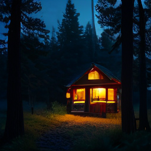
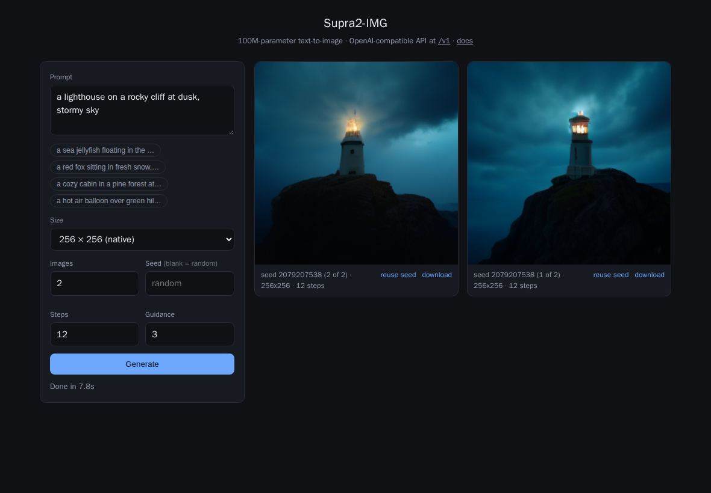

Run it
One container. Weights download on first start and are cached in the volume.
Start the server
docker run -p 8000:8000 \
-v supra-hf:/data/hf \
ghcr.io/sirmmo/openai-supra:latestGenerate with the OpenAI SDK
from openai import OpenAI
client = OpenAI(
base_url="http://localhost:8000/v1",
api_key="not-needed",
)
result = client.images.generate(
model="supra2-img",
prompt="a red fox in fresh snow",
extra_body={"seed": 42, "steps": 50},
)Samples
Generated by this server on CPU, at the model's native 256 × 256.

Built-in web form
The server's root serves a form for prompting without any client — same API underneath.

API
POST /v1/images/generations, with OpenAI's request and error shapes.
| Field | Supported values |
|---|---|
prompt | Required. Flan-T5 sees the first 128 tokens. |
n | 1–10, generated as one batch. |
size | auto / 256x256 native; other sizes are upscaled and center-cropped. |
quality | low = 20 steps, medium = 35, otherwise 50. |
response_format | b64_json (default) or url. |
output_format | png, jpeg, webp. |
seed, guidance_scale, steps | Extensions — send via the SDK's extra_body. A seed reproduces the same image on any device. |
Also GET / (web form), /v1/models, /docs (OpenAPI) and /health.
Set SUPRA_API_KEY to require Authorization: Bearer.
Good to know
- 256 × 256 is the real resolution. Larger sizes are resampled, not generated at higher detail.
- Speed. 50 steps take roughly 10–15 s on CPU; a GPU build is a one-line change to the Docker build arg.
- One request at a time. The sampler is serialized, so the server is best used as a personal or small-team endpoint.
- Not supported. Streaming, image edits and variations — the model is text-to-image only.